The Queen of Holland.
BY MARY SPENCER-WARREN.
Her Majesty the Queen-Regent of Holland has graciously accorded special permission to the writer of the following article to visit the Royal Palaces of Amsterdam and The Hague to obtain photographs for publication in this Magazine: a privilege of the greatest value, which is now accorded for the first time, the palaces never before having been photographed.
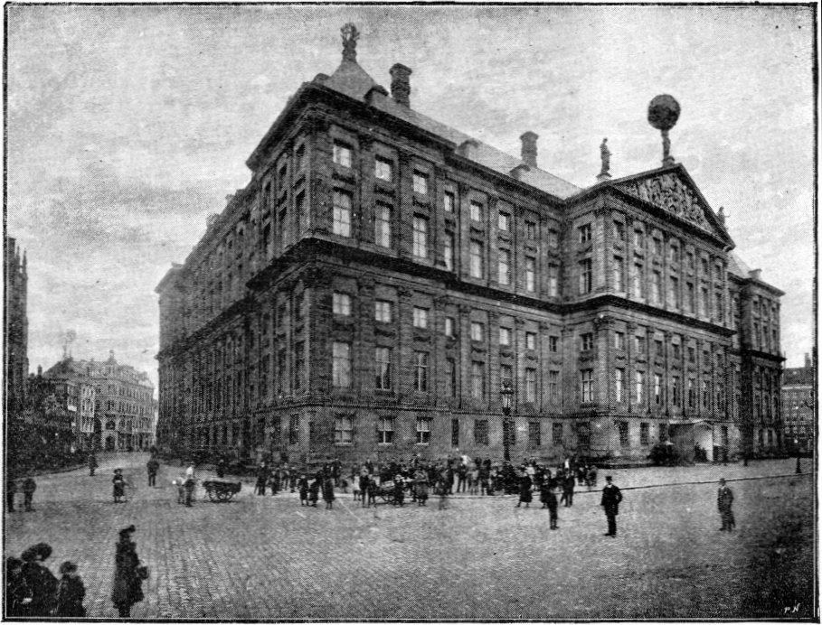
THE ROYAL PALACE, AMSTERDAM.
From a Photo. by Gunn & Stuart, Richmond.
{kind=link}
"I know a city, whose inhabitants dwell on the tops of trees like rooks." Thus spake Erasmus; and this literal fact makes Amsterdam a most curious as well as a most interesting place.
Were I writing of any one of Queen Victoria's Palaces, I should have no need to speak of its situation: but, travellers though we are, we do not all see these quaint Dutch cities, so a few introductory words may not come amiss.
A walk round the city reminds one of Paris with its Boulevards planted with trees, and Venice with its all-present canals; indeed, it is actually divided up into nearly one hundred islands, connected by over three hundred bridges. A curious thing is, that its inhabitants are really living below the level of the sea, which is stoutly dammed out. Thus, if necessary, water could be made its protection from any invasion.
To go back to the commencement, everything, streets, houses, and bridges are all built upon wooden piles driven into the ground. This is absolutely necessary, as the natural soil is such that no permanent structure can be put up otherwise. On how many piles this city stands it is impossible to form an accurate idea; one building—the Royal Palace (Het Paleis)—resting on some 13,659. This is situated on the Dam, the highest point of the city. It is 282ft. long; the height, with tower, being 187ft. It was built from 1648-1655 for a town hall, and only became a Royal Palace in 1808, when Napoleon first abode in it. As such, it has a great drawback, the want of a suitable entrance.
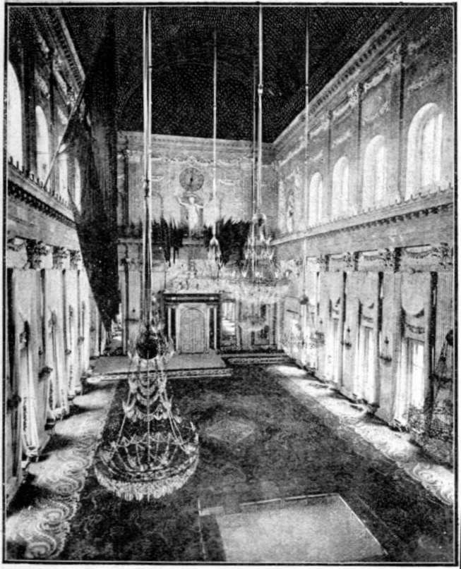
THE HALL OR RECEPTION-ROOM.
From a Photo. by Gunn & Stuart, Richmond.
{kind=link}
I enter now at the rear of the building, which—situated in the Gedempte Voorburgwal—is the entrance used by their Majesties. In spite of its civic associations, when once inside there is much of the state and grandeur inseparable from Royalty, and I soon determine that Holland can almost equal England for its palatial contents and embellishments. The staircases and corridors are severe to simplicity, but when I look round the first apartment I intend inspecting, I am struck with the immensity and the exceeding beauty of its appearance. This is known as the Hall or Reception-Room, and is said to be the finest in Europe. Its proportions are certainly magnificent, 125ft. by 55ft.—a special feature being a remarkably fine roof, 100ft. in height, with entire absence of columns or other support. Roof, walls, and the hall entire are lined with white Italian marble, the floor having an inlaid copper centre representative of the Firmament. The large flag you see drooping from the roof is commemorative of the siege of Antwerp, being the one used by General Chassé on that occasion, the various groups of smaller ones being reminiscences of the eighty years' Spanish war and of Indian foes. Some very beautiful examples of the sculptor's art are manifest, the photographic work here introduced giving some idea of the exquisite detail and most remarkable execution of Artus Quellin and his able assistants.
Here you will observe an allegorical group denoting Plenty, Wisdom, and Strength, typical of the City of Amsterdam. We had a little adventure in securing views of this hall. At one end is a small gallery, used as the mainstay for the temporary orchestra, which is erected on festal occasions. Thinking our work could be better shown from that point, we proceeded to it by a dark and winding staircase in the rear.
All went well for a time, but during a period of watchful quietude our artist was suddenly and unexpectedly confronted with a gathering of rats of anything but peaceable aspect. It was too much for him! He made a wild rush for the staircase, which, being narrow and treacherous, resulted in a too rapid descent, a very forcible alighting at the foot, and a much bruised and shaken body.
For a few minutes we thought our photographic work would be closed for a season; but when spirits and energies revived, we began to think of the camera and the very long exposure plate up at the top; so up we went again with much clattering commotion to warn our enemies of our approach, and thus you have a view that one of our party will ever regard as dearly obtained.
Note the extremely delicate crystal chandeliers, for these are quite a feature in the Dutch Palaces; so graceful and handsome, and so unlike the generality of heavily-constructed appendages one is accustomed to behold. The other end of the hall has also some choice sculptured marble, but unfortunately part of it is hidden by the before-mentioned gallery. Could you obtain a clear view, you would see a figure of Justice, with Ignorance and Quarrelsomeness crouched at her feet: on one side a skeleton, and on the other Punishment. Above all is the figure of Atlas supporting the globe.
Here I am given a full description of the appearance of this hall when laid for the State banquet on the occasion of the somewhat recent visit of the German Emperor. Splendid, indeed, must have been the effect of the hundreds of lights gleaming upon the pure marble, the rare exotics, the massive plate, the State dresses, and the rich liveries; and I am not surprised at the enthusiasm of the narrator as he dilates on the grandeur displayed.
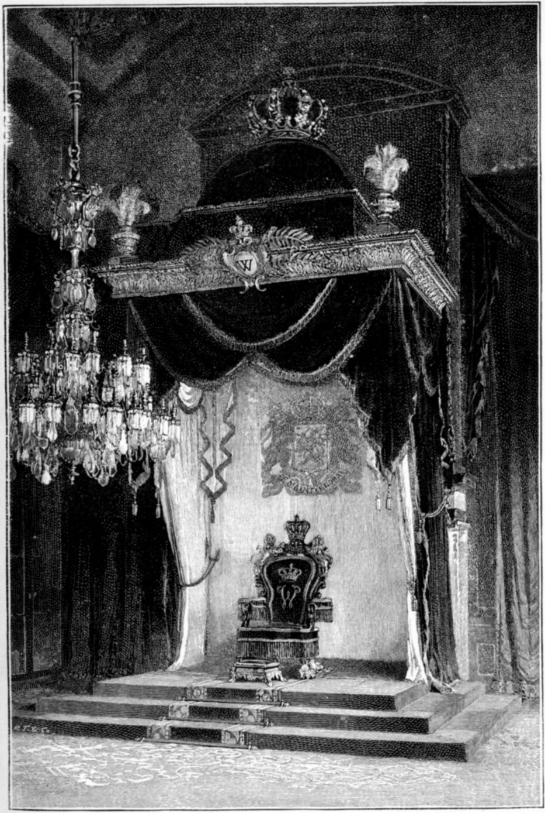
THE THRONE ROOM.
From a Photo. by Gunn & Stuart, Richmond.
{kind=link}
Passing through the doorway immediately under Atlas, I am at once in the Throne Room. This is a fine apartment; its ceiling in alternate painted panels and arms in relief, Marble columns stand out from the rich oaken walls, rich draperies giving colour to the whole. I hear of a rare old painting and a fine chimney-piece hidden away behind the throne, but have no opportunity of seeing, so perforce turn my attention elsewhere. On either side are some glass fronted cases containing quite a collection of ragged and venerable regimental colours of unmistakable Spanish origin. Had I time to linger, I should hear of many fierce struggles and much gallant conduct ere these trophies were taken; but all this is of the past, and so I leave them, silent tokens of national pride.
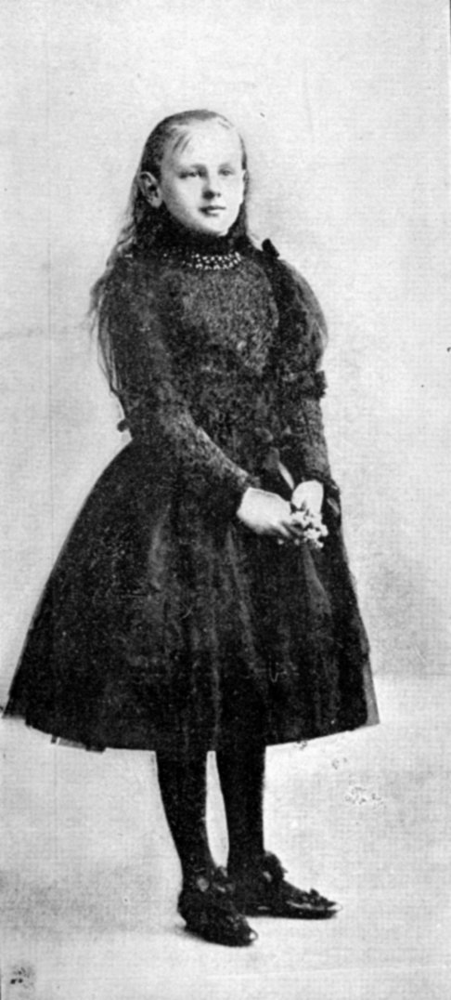
THE QUEEN OF HOLLAND.
From a Photo. by W. G. Kuijer, Amsterdam.
{kind=link}
The chandeliers here are of very unique and costly appearance: Royal Arms and crowns in ormolu, with pendants of curious device in pure crystal; three hundred and sixty-four lights are here displayed.
While I have been looking round, attentive servitors have been busily engaged in uncovering the throne and canopy for my inspection, and the crown which surmounts the chair is fetched from its safe keeping place, screwed on, and I am at liberty to thoroughly examine the most important piece of furniture in the kingdom.
It is essentially new looking; and really is so, only having been fitted up some three years since, on the death of the late King and the consequent accession of Wilhelmina, the present child-Queen. Virtually this seat is unoccupied, as five years must elapse ere the coming of age and coronation of her youthful Majesty. Meanwhile her mother is Queen-Regent, governing wisely and well, and endearing herself to the people in every way; but more especially in the care she manifests in the training of their future ruler to the proper regard of the important position she will have to fill, and the faithful observance of duties appertaining to such a position.
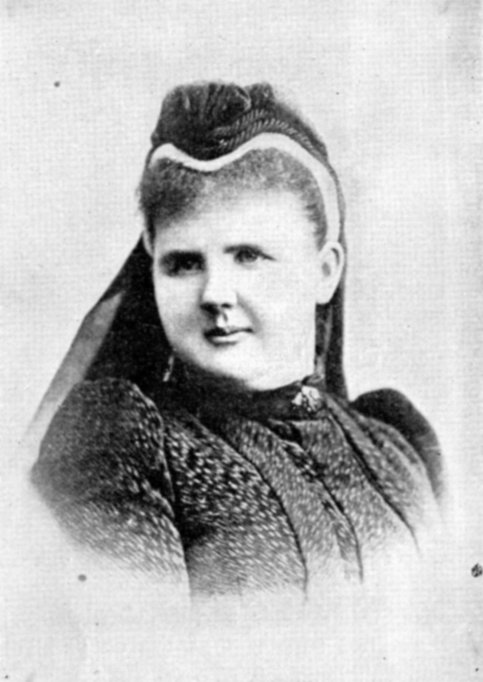
THE QUEEN-REGENT.
From a Photo. by W. G. Kuijer, Amsterdam.
{kind=link}
Accomplishments are imparted as a matter of course, but very much attention is given to formation of character, and many stories reached me of the wise method displayed, and the already promising result, giving much hope for a bright future. As most of my readers are aware, the Queen Regent and our Duchess of Albany are sisters, and all who know anything of the sweet-faced widow of our beloved Queen's youngest son will at once comprehend much of the sister whom she so nearly resembles.
Perhaps you would like a description of the throne. The chair is beautifully burnished, covered with ruby velvet, and edged with ruby and gold fringe; the back is surmounted by a crown containing sapphires, with lions in support; another crown and the letter W being wrought on the velvet immediately underneath. In front of the chair is a footstool to match. The canopy is curtained in ruby velvet, with lining of cream silk—in token of the youth of its future occupant—with fringe, cord, and tassels of gold. It is surmounted by crowns and ostrich plumes, on the inner centre being worked the Royal Arms, with the motto "Je Maintiendrai" standing out in bold relief. On either side the canopy may be noted the floral wreaths containing the "Zuid Holland" and "Noord Holland" respectively. The room—as are the major part of them—is richly carpeted with hand-made "Deventers" of artistic design and colour blend.
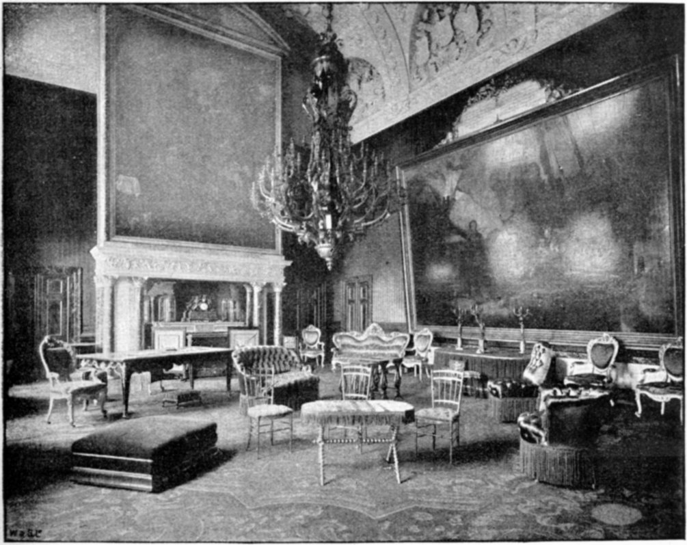
THE QUEEN'S SITTING-ROOM.
From a Photo. by Gunn & Stewart, Richmond.
{kind=link}
Leaving here, I pass on to a room which is of much importance, namely, the sitting-room of Her Majesty the Queen. In the lifetime of the late King it was his habit to pass very much of his time here; thus, this was really His Majesty's audience chamber. Here he would have his little daughter of whom he was passionately fond—taking a great delight in listening to her merry prattle, and her amusing remarks on whatever attracted her attention. The windows of the room look out on to the Dam, a large square, which is quite the busiest part of the city. The view from these windows is a never-ending source of interest to the little Princess, and here she is wont to station herself, the inhabitants continually congregating and greeting her with hearty cheering.
The room has an artistic ceiling by Holsteyn, and on the walls are some paintings rich in detail, and of much historic interest. One of Flinck's largest works—"Marcus Curius Dentatus"—is at one end: at the other, one of Ferdinand Bol's—"Fabricius in the Camp of Pyrrhus." Facing the windows is one by Wappers and Eeckhout: one that irresistibly appeals to the hearts of all Hollanders. It is called the "Self-Sacrifice of Van Speyk," and depicts the brave admiral of that name blowing up his vessel rather than surrender.
Van Speyk was educated in one of the public schools for which Amsterdam is famous. Quite early in life he entered the navy, where his career was brilliant and his promotion rapid, but never did he so gain the devoted admiration of his countrymen as when he had nothing before him but death or defeat, and chose the former, calling on his men to jump and swim, if they cared to; if not, to remain and share his fate. Only one jumped: the others stood by their commander, faced death calmly, and won a never-dying renown for their heroism.
There is a wonderful chandelier from the ceiling centre, made of copper and ormolu, burning seventy-two lights, and of such enormous size that one wonders how many floors it would crash through if it were to give way; then I learn that it is supported by concealed cross-beams hidden away under the ceiling. After that information, it is a great deal more comfortable to walk about under it than hitherto, as the men in uncovering it had moved it, and it was still swinging backwards and forwards in anything but a reassuring manner. Some fine marble columns and a sculptured chimney-piece are worth attention, as are the costly hangings and carpet. Here I may say that the greater part of the furniture in this Palace is "First Empire" style, and of the costliest description.
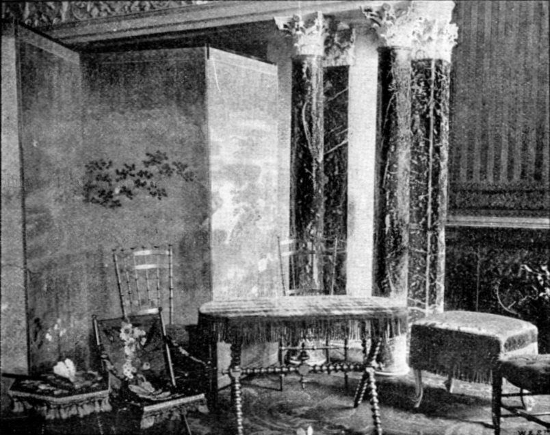
A CORNER OF THE QUEEN'S SITTING-ROOM.
From a Photo. by Gunn & Stuart, Richmond.
{kind=link}
What will, no doubt, greatly interest you is the accompanying photograph of small furniture specially made for her youthful Majesty, and used exclusively by her. The frames are of the finest over-burnish, the plush upholstery being decorated with the rarest specimens of art needlework. On one of the little tables you will note a battledore and shuttlecock, with another thrown upon the floor, as though the player had been suddenly interrupted in the midst of her play. Very ordinary make and shape are these toys, such as you may see in any middle-class English home, and each of them looking like favourites—judging from the signs of much use they present.
Play-days are not yet over for the Queen, and doubtless she does not wish to hasten their departure, for children are children all the world over, whether born in palace or cottage. This particular one is not to be envied by those of lower station, who have not the responsibility of position ever looming in front of them—for she is shut away from many youthful pleasures, and denied the constant companionship of those suited to her age.
I heard a story that on one occasion, in playing with her dolls, she was thus heard to speak to a supposed refractory one: "Now, be good and quiet, because if you don't I will turn you into a Queen, and then you will not have anyone to play with at all." That is sufficiently pathetic to speak volumes of what it is to be born in the purple, as was Wilhelmina of the Netherlands.
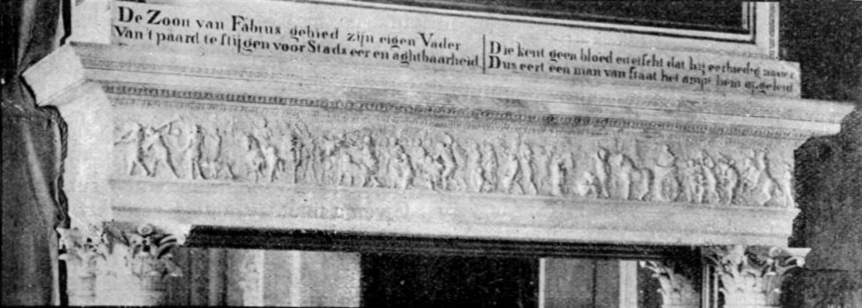
PAINTED FRIEZE ON MANTEL-PIECE IN DINING-ROOM.
From a Photo. by Gunn & Stuart, Richmond.
{kind=link}
The Hall of the Mosé is the next place I visit, used as the small dining room of the Royal Family. Unfortunately, this is just undergoing partial restoration, so no proper picture or description can be obtained. I observe a painted ceiling, some marble columns of the Ionic order, blue and gold furniture and hangings; and then some costly and rare paintings, three in number.
Facing the windows is a masterpiece of Jakob de Wit, "Moses Choosing the Seventy Elders." The figures are life-size, the painting—extending the entire length of the room—said to be the largest in Europe. There are marble fireplaces at either end, over one "Solomon's Prayer," by G. Flinck, and over the other "Jethro Counselling Moses to Appoint Judges from the People," by Bronkhorst. Quite a feature of this room is the wonderful deceptive painting by this master over each door, and on a continuous frieze. All of this is such an exact representation of sculptured relief, that it is almost necessary to touch it ere one can be convinced of its really level surface. I was told that this is the only known example of this truly wonderful work.
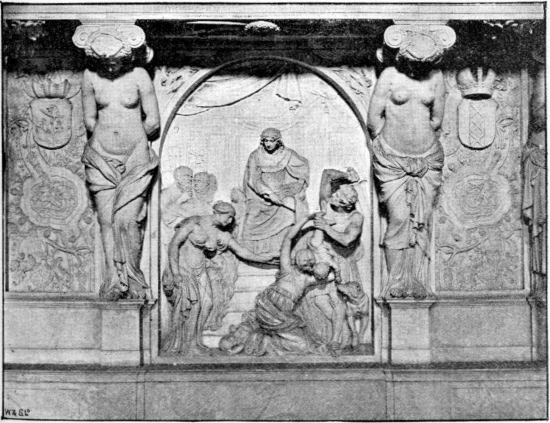
THE JUDGMENT OF SOLOMON.
From a Photo. by Gunn & Stuart, Richmond.
{kind=link}
Continuing my way through the aides-de-camps' waiting-room—stopping merely to note one of Jan Livensz' works—I go on to the Vierschaar. Here the walls are lined entirely with white marble, and present a fine sculptured frieze representing Disgrace and Punishment, with reliefs emblematical of Wisdom and Justice. The one here presented is Wisdom, as shown in the Judgment of Solomon.
In the large dining-room may also be seen more of the matchless white marble ornamentation, and I should much like to linger and admire, but as Her Majesty the Queen-Regent has graciously promised me the entrée of other of her Royal Palaces, I am obliged rather to curtail my work in Amsterdam.
Just now their Majesties are not at this particular Palace, so I see nothing of State dinners, receptions, and other functions, but although I do not see them, I hear very much; and it would seem that when they are here, the Palace is a sort of open house, and festivity is the order of the day. To all appearance the etiquette is not quite so rigid as at our Court, the Sovereign being more accessible to the people. Persons wishing to pay their respects call at the Palace about five days previous, write their name in a book kept for the purpose, then they are admitted on the specified day, provided no good reason exists for their exclusion. The people are eminently loyal, and speak of the little Queen in tones of warmest affection, an affection which is also extended to the Queen-Regent, who has evidently made herself a firm position in the country.
The Palace at Den Haag is before me now, but first perhaps you would like to know something of the Palace at the Loo, a place I had the privilege of seeing; though, as their Majesties were actually in residence there, photographic work was not possible.
The Loo is near Apeldoorn, and some considerable distance from Amsterdam. I have only the one day to spare, so am off early in the morning. Steaming out of the Central Station, I soon find myself speeding along in such comfortable, well-warmed carriages as would rejoice the unfortunate winter traveller in this country, who is all but dependent on his ability to pay for the not very useful foot-warmer.
The country is pretty but flat, dykes instead of hedges, windmills without number; hundreds of cows in the fields, very fine cattle, but they do look comical, for the majority of them are wearing coats!
At frequent intervals along the line are road crossings, each with their little gatehouse, and each kept by a woman, who turns out as we pass, dressed in her long blue coat with scarlet facings, quaint, tall shiny hat, and in her hand the signal-flag.
At length I reach Apeldoorn, and there a difficulty presents itself. That the Palace is some distance away I am aware, but how far I do not know, or in which direction, and while I am parleying and gesticulating in a mixture of French, English, and a few words of Dutch, the only conveyance obtainable takes itself off, and I am left to tramp through the woods with a jargon of Dutch directions ringing in my ears, and a very faint idea of longitude or latitude in my mind.
The first part lay through a long, straggling village leading right into a beautiful forest. Given a fine day, and a certainty of route, it would have been simply grand; but as it soon poured in torrents, my situation was anything but enviable—in fact, I was almost in despair, when a huge cart laden with trunks of trees came slowly from a turning near.
Making the man in charge understand that I wanted the "Paleis," I found he was bound in the same direction. By this time the rutty roads were almost ankle deep in mud, so when I was invited to ride, I gladly scrambled to the top of the pile, and so jogged along; my good-natured guide trudging at the side, pipe in mouth, regardless of the weather. In such stately style, then, I at length sighted the Palace, but was careful to make a descent before getting too near, as THE STRAND MAGAZINE must make a more dignified appearance at a Royal residence than a wood-cart and a smock-frocked driver can impart.
Four or five men in State liveries bow profoundly as I enter, one of whom conducts me to an ante-room, and, after a short interval, through some long corridors, up some stairs and into the presence of one of Her Majesty's Gentlemen of the Household. A courteous interview with him, and I am asked to wait for Her Majesty's Private Secretary, who, out at present, will see me on his return.
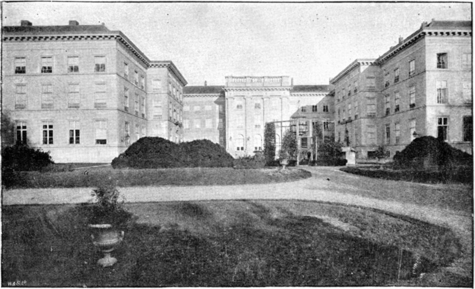
THE ROYAL PALACE AT DEN HAAG.
From a Photo. by Gunn & Stuart, Richmond.
{kind=link}
Of course I make the best use of the interval and see all I can of the Palace. A fine-looking and imposing building it is, standing back in a large quadrangle, the latter being gay with flowers. The outer rails are literally on the edge of the wood, and no more secluded spot can be imagined than this—the favourite residence of their Majesties. His Majesty the late King also preferred this residence to those more immediately near or in towns, and it was here he breathed his last.
What I see of the interior is superbly grand, but it is more to the purpose that I have the honour of seeing their Majesties during the day, and the opportunity of some observation. The youthful Queen seems a most pleasing and intelligent-looking child, and is eminently child-like and unaffected in her manner and movements. Readers may be interested in knowing that, in addition to masters provided for Her Majesty's training, she has an English governess, under whose charge she is more immediately placed.
The Queen-Regent, as I have already said, much resembles her sister; not so tall, rather stouter, but with much the same gentle and rather sad expression of countenance. Strange that these two sisters should both become widows at an early age. One comfort they have, there is no very great distance between them; and though, of course, the Queen-Regent cannot leave her country much, there is nothing to prevent the Duchess of Albany going there; so a suite of apartments is kept for her at each Palace.
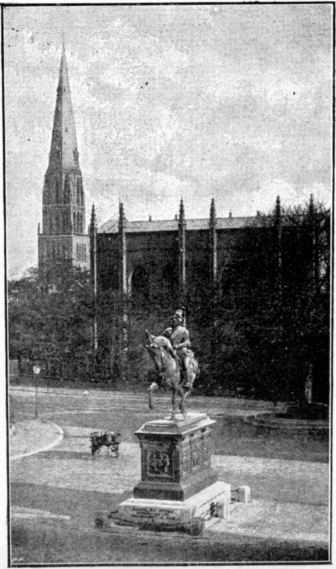
STATUE OF WILLIAM II, WITH THE CHURCH.
From a Photo. by Gunn & Stuart, Richmond.
{kind=link}
My interview with Her Majesty's Private Secretary is of the most pleasant, and I cannot but record my grateful appreciation of this gentleman's kindness and courtesy extended towards me throughout my stay in Holland; such courteous attention much facilitating my work.
Back again to Amsterdam; and the next day off in quite an opposite direction to Den Haag, one of the cleanest and most picturesque places I have ever seen.
Here the Palace was built by William II. It is in the Grecian style, and stands on the site of a former hunting-lodge, dating back to the 9th century. Facing the principal entrance is an equestrian statue of William II., at the back of which you note the church attended by the family. The entrance hall and staircase are lined with marble, the stairs themselves being of the same. Before proceeding up them, however, we go through to the pretty and well-kept garden and take a view from the lawn. In the right wing of the building as it faces you, the Queen's private apartments are situated, the left wing containing the rooms occupied by the Duchess of Albany when at The Hague.
Now we pass up the grand staircase, where I pause to note the Ionic columns, the ormolu and porcelain candelabra, a Siberian vase from the Emperor Nicholas, five immense vases from the Emperor of China, a painting of William IV., and one of Maria of Stockholm and family.
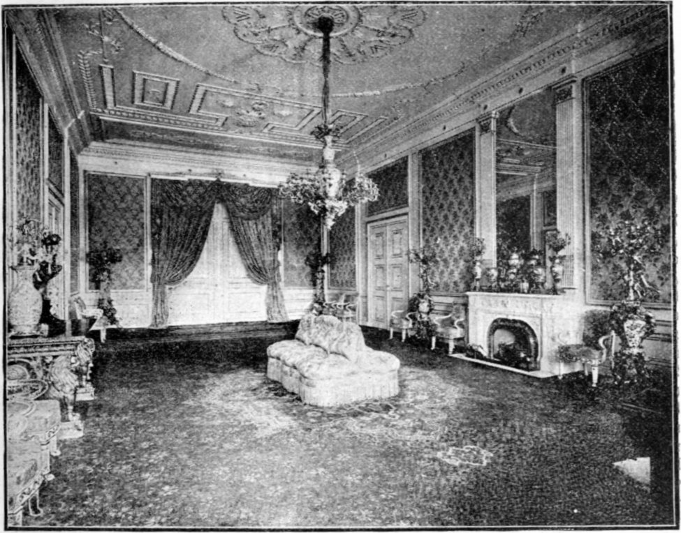
THE LATE KING'S RECEPTION-ROOM.
From a Photo. by Gunn & Stuart, Richmond.
{kind=link}
Leaving here, the first room I enter is the King's reception-room. This is a very bright looking and expensively fitted apartment, furnished in electric blue and gold, massive gold-framed panels, and a ceiling decorated in relief with arms and mottoes in gold and white. The chimney-piece is purest marble, the frescoes showing crowns, arms, etc. The candelabra are over-burnished brass and Dresden china, some being Japanese.
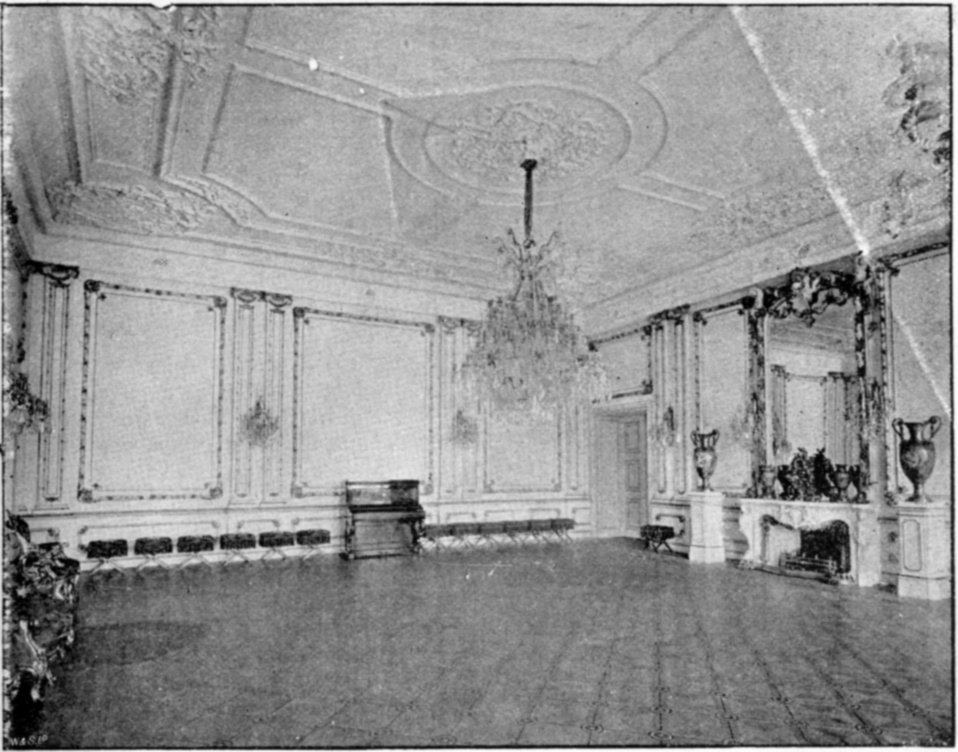
THE QUEEN'S BALL-ROOM.
From a Photo. by Gunn & Stuart, Richmond.
{kind=link}
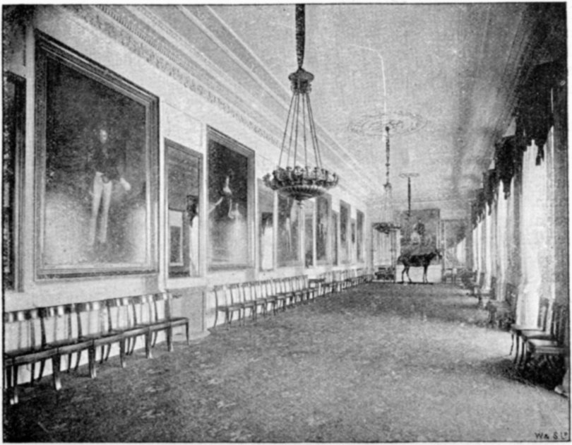
THE LARGE DINING-ROOM.
From a Photo. by Gunn & Stuart, Richmond.
{kind=link}
The next room is most interesting, for it is a small ball-room, the ball-room in fact of Her Majesty the Queen. It has a beautiful inlaid floor, a white ceiling worked in relief, crimson and gold curtains, and furniture of the First Empire, some of it upholstered in gold silk, with a variety of colours intermixed. Here are shown some priceless Sèvres china, and a present of vases from the Emperor Napoleon. Also I note a fine marble vase from the King's Palace in Luxemburg. On the wall are some handsome gold-framed mirrors, and from the ceiling costly chandeliers with two hundred and twenty lights. The mantel is exquisitely carved marble, with an ormolu frieze. On one side you will note a small piano; it is a French one, of very clear and fine tone, and beautifully finished in every respect. In this room Her Majesty the Queen may be imagined enjoying the balls given to the youthful aristocracy, something different to the State dances in the larger room; and, doubtless, by a long way, much more enjoyable. By the time the Queen can command the State balls, she will have commenced to feel the cares of her position; and will look back with real regret to the assemblies here, when she had merely to enjoy herself, a devoted mother observing the graver duties, her own greatest trouble, perhaps, being the acquirement of the tasks assigned by the governess and masters.
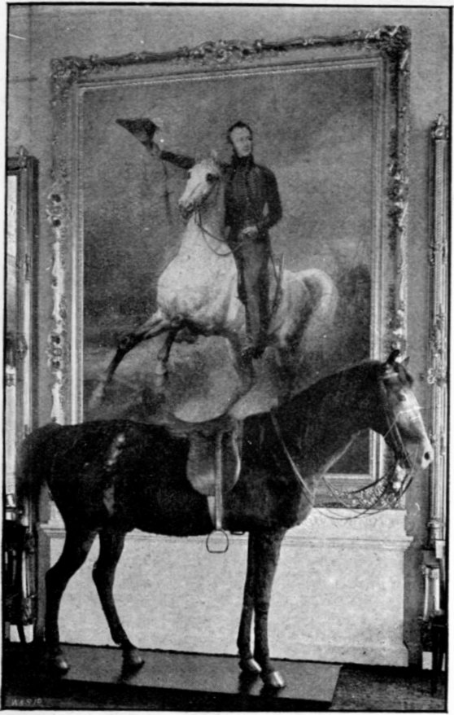
FAVOURITE HORSE OF WILLIAM II.
From a Photo. by Gunn & Stuart, Richmond.
{kind=link}
The large dining-room has some fine family portraits on its walls. The first you will notice is that of William II., on horseback, leading an attack; the artist (Keirzer) has produced a first-rate work of both man and horse. Underneath this picture stands the favourite horse of William II., one which carried him through numerous engagements, and earned from his Royal master a gratitude and affection that caused him to wish for his preservation in a position where he would constantly be reminded of him.
The ceiling of this room shows some beautiful relief carving of fruit and flowers, also some fine fresco work; the chandeliers here are massive, as is the furniture and other appointments. The room is long and of not much width, but lofty and well-lighted.
The buffet adjoining the dining-room has some very costly and, at the same time, some very interesting contents. The Empire furniture is draped in rich crimson silk, the walls being covered with silk brocade of the same colour. The chimney-piece of sculptured marble, with an ormolu frieze, holds some choice antique porcelain vases and a valuable Roman timepiece. A massive chandelier hangs from the centre of a ceiling wrought with the arms of the house—this chandelier being solid silver. It was presented by the inhabitants of Amsterdam, while two silver lustres at the sides of the fireplace were presented by Rotterdam. Two exquisite statues stand in front of the windows, one of Venus, the other Diana, midway between which is an immense porcelain vase on a pedestal. This you will note in the view given of the room. It has special interest just now, as it was given by Marshal MacMahon, whose death recently occurred, and whose funeral—a State military one—I had the opportunity of witnessing a few weeks ago in Paris.
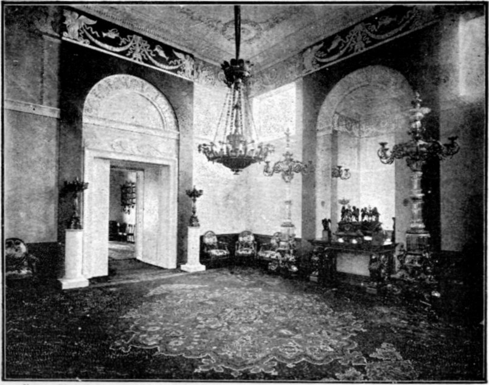
THE CRYSTAL ROOM.
From a Photo. by Gunn & Stuart, Richmond.
{kind=link}
The windows are of very fine stained glass, the different panes giving portraits of Kings and Princes, under each being depicted battles they had fought. Note this rare Florentine mosaic table with pedestal of ormolu; then we will pass on to the crystal room, an ante-room to the ball-room. Some immense candelabra of purest crystal at once attracted my attention; not only were they of the largest I had ever seen, but they were absolutely unique in composition: the pedestals in support were ormolu and marble.
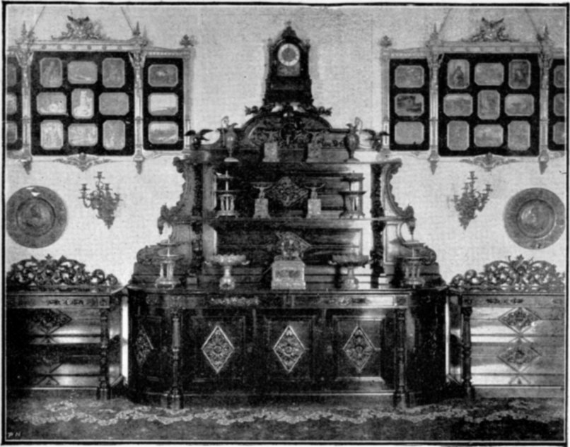
SIDEBOARD AND MINIATURES IN SMALL DINING-ROOM.
From a Photo. by Gunn & Stuart, Richmond.
{kind=link}
The appointments here are again in the First Empire style. The view here shown is looking into the small dining-room, the private dining-room of their Majesties. In it there is to be seen a costly collection of miniatures, nearly a hundred and twenty in number, every one of them from the hand of Dutch masters. They are all beautifully framed in groups. In the photograph you will observe a finely carved side-board with some of these miniatures showing on either side. Also in this room you will find several specimens of engraving on brass and some Russian productions in malachite.
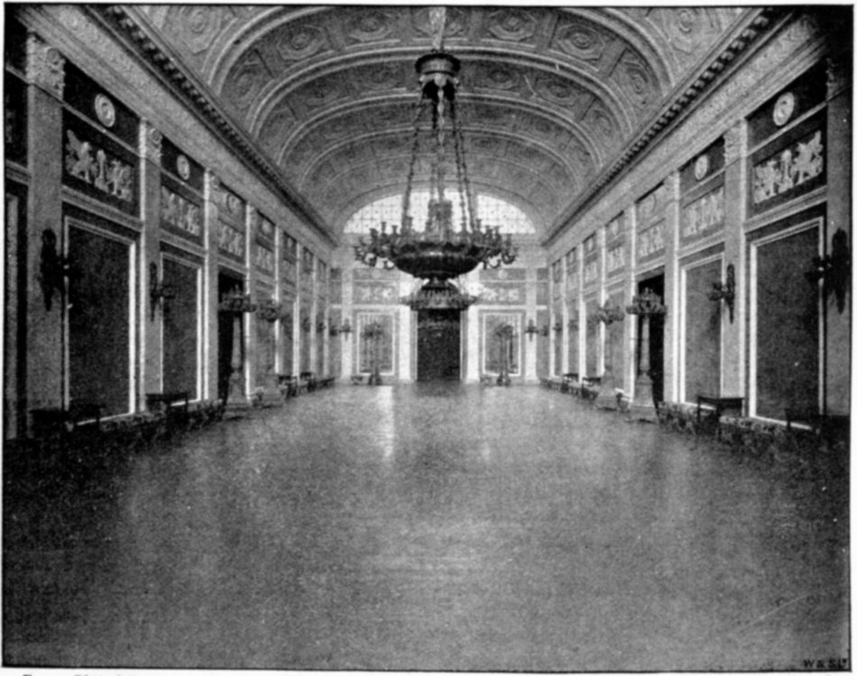
THE STATE BALL-ROOM.
From a Photo. by Gunn & Stuart, Richmond.
{kind=link}
Now to the State ball-room—a nobly proportioned room, but of somewhat severe aspect Some good relief carving is shown and a splendid parquetry floor; also some costly furniture, over-burnished and upholstered in crimson with floral devices. No doubt it has a very imposing and gay appearance when lighted up and filled with guests. Nearly seven hundred lights are displayed, which would naturally cause a most brilliant effect. Somehow ball-rooms are never satisfactory when viewed in the day-time, unless you have an eye for proportions only; in that case this one could not fail to please, as it cannot be less than 90ft. long and is of magnificent height, added to by a glass concave roof.
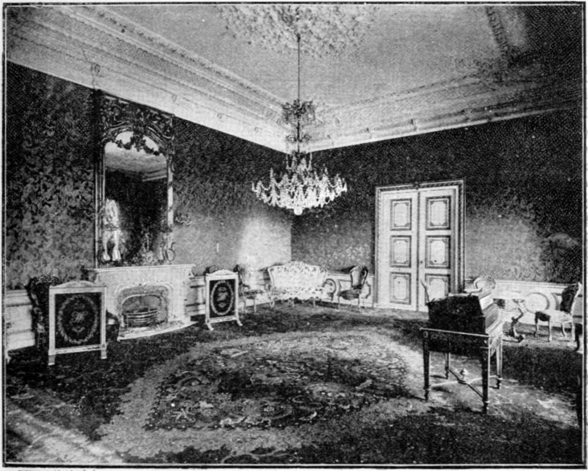
THE QUEEN'S RECEPTION-ROOM.
From a Photo. by Gunn & Stuart, Richmond.
{kind=link}
The Queen's reception-room is prettily hung in crimson with designs depicting art and music; the furniture bright and handsome in crimson and cream. On either side of the fireplace stand some crimson velvet screens in burnished frames, the crown and arms worked on the velvet in characters of gold. In the accompanying view you will observe a large album on a stand; this was given to the Queen-Regent by the ladies of Holland. It is of leather, with ormolu mounts, on the covers being painted panels and flowers worked in silk, these flowers being surrounded with rubies and pearls; and at either corner is a large sapphire. The interior shows pages of vellum, with names of subscribers beautifully inscribed.
This room will, of course, be the one where the young Queen will receive when she commences to reign.
From here I went to view a suite of apartments, formerly the property of Queen Sophia, the first Consort of the late King. These rooms are still in the same condition as when Her Majesty died; they are very fine rooms, and contain a vast number of curios of every description. They are lined entirely from floor to ceiling with mahogany; the furniture, which is massive, antique, and beautifully carved, being also of mahogany and tulip wood. I find one of Erard's grand pianos standing in the boudoir, and am told that it was a favourite instrument of the late Queen. There are some fine specimens of vases: one an "Adam and Eve," some of Swiss make, and others of Dresden. Also I note an exquisite model of a ship, an inlaid Empire mirror, and other treasures too numerous to particularize.
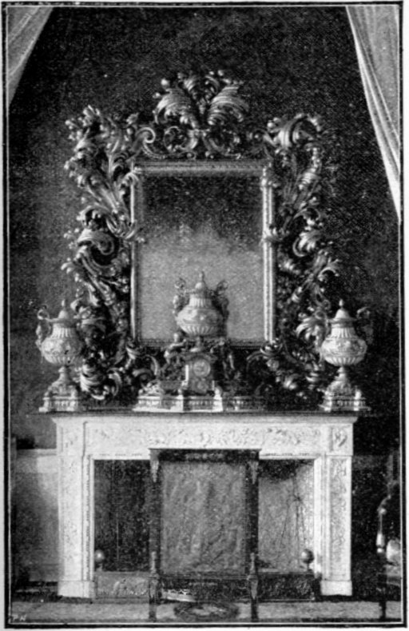
OVER-MANTEL IN TEA-ROOM.
From a Photo. by Gunn & Stuart, Richmond.
{kind=link}
The tea-room is another that I must make brief mention of. It contains some valuable souvenirs in the form of vases, some from the Emperor Napoleon (these are jewelled), some from William IV. of Germany, and some from the Emperor Frederick. Then there are others from Berlin and Potsdam, and still others of Sèvres. On the marble mantel is a very intricate French timepiece, and over it an exquisite silver-framed mirror. An inlaid mosaic table is a feature here. The worth of it must be fabulous; the design is marvellously executed. Pope Pius IX. was the donor. This room is really the tea-room for the Royal ladies when in residence. Music is again to the fore, and here Steinway is the favourite, one of his grand pianos occupying the place of honour.
Now I go downstairs for a brief survey of the private apartments of the late King. I shall not attempt to describe them in detail, but content myself with mention of one or two things I specially noticed. I started with the billiard-room, a good-sized room and well fitted; but obscured by the covers denoting non-usage. One curious article I must note. It is a clock and musical-box combined, giving out a variety of twenty-seven tunes. The visible part of it is a pure alabaster representation of the tomb of our Henry II, supported by lions couchant. Rather a strange model for a musical-box containing lively airs, is it not?
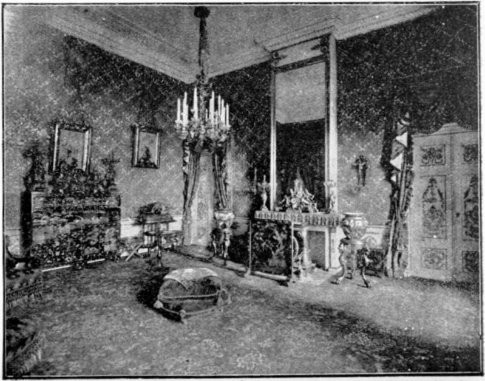
THE LATE KING'S SITTING-ROOM.
From a Photo. by Gunn & Stuart, Richmond.
{kind=link}
Then I pass on through the King's dining-room, a stately and richly-appointed apartment. On through the Ministers' room, and so into His Majesty's private sitting-room. Here I cannot but linger, there are so many treasures rich and rare, the chief of which consists in the elaborate cabinets and other furniture, all of tortoiseshell and silver, quite the best I have seen of its kind. Some of it looks as though crammed with secret drawers, and I stand before it wondering whether Queen Wilhelmina will be as anxious to discover and overhaul them as I should be.
I could tell you a deal more of what I saw at this Palace at Den Haag, but, doubtless, have said enough to show you something of its wealth of appointments and costly treasures. One cannot help thinking what a sum all this has cost, and what it must take to keep up so many places; but the Royal Family of the Netherlands have well-lined coffers, as it is not only their own country that owns their supremacy, but they have also many dependencies in the Indies, bringing in enormous revenues.
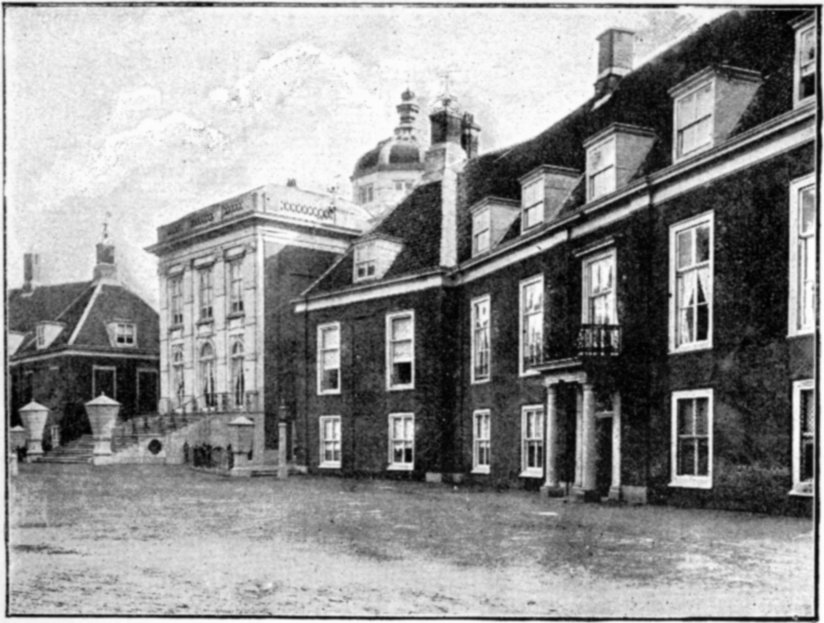
"T'HUIS IN'T BOSCH," NEAR DEN HAAG.
From a Photo. by Gunn & Stuart, Richmond.
{kind=link}
I have mentioned three Palaces; I know of five; but will close with just a few words respecting a fourth, and a view of the same, which is charmingly pretty. This Palace is called "T'Huis in't Bosch," and is just a nice carriage drive from the town of Den Haag. It stands right in the midst of a beautiful park, with herds of deer and hundreds of gay-plumaged birds—a park that far and away surpasses even our vaunted Richmond Park—magnificent timber, dense undergrowth, wild flowers in profusion, and now and again winding lakes and streams, crossed by rustic bridges, and such views over hill and dale as would delight either an artist or an admirer of Nature. The above view of the house will give a good idea of its outside appearance. I have no time for interiors, or should be tempted to prolong this indefinitely. We have had a peep at the Palaces of Holland, and many of us will know more of the country and its reigning family for the visit.
Holland, with its youthful Queen, has a future we cannot wot of, but we all hope it is a prosperous and bright one, and we all agree in thanking Her Majesty the Queen-Regent for the opportunity of gaining this information, and wish for her daughter all the happiness and wisdom that she—the Royal mother—could desire for her.